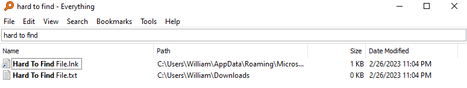

VS code tips
When you are writing a lot of lines of code that are similar and you need to keep copy pasting them, you can use this shortcut. Shift + Alt + Down arrow key will copy the line of code that your text cursor is on and will copy it down. This is particularly usefully when you need to write the same thing again and again but only change a little bit of the code, like writing tables in HTML.

Compressing Files with 7.zip
Tired of waiting forever when zipping up or unzipping files or folders in Windows? They you should try 7.zip. It is an open source software that is much, much faster then the default windows file compressor. It also is needed to unzip any files that you download that has the .7z file extension.

Faster File Searching with Everything
If you often using the search feature in file explorer then you know how long it takes for it to actually find the files you are looking for in medium-large folders. Sometimes it can take minutes to find a particular file that installed somewhere weird and you now trying to find it. With the file search engine Everything (which can be found at voidtools.com), it takes less then a second to find any file on your system. Everything can search through every single file on your computer system and return your results in a second.